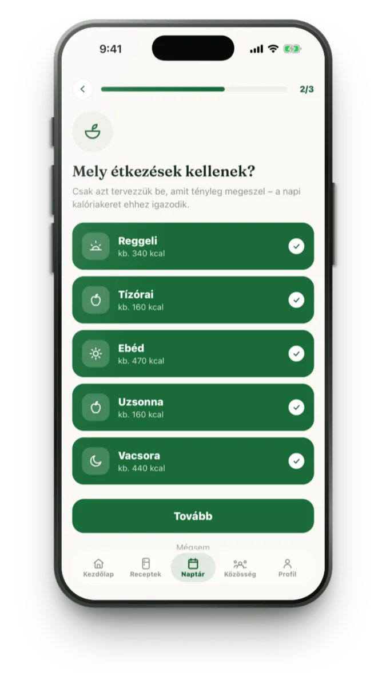
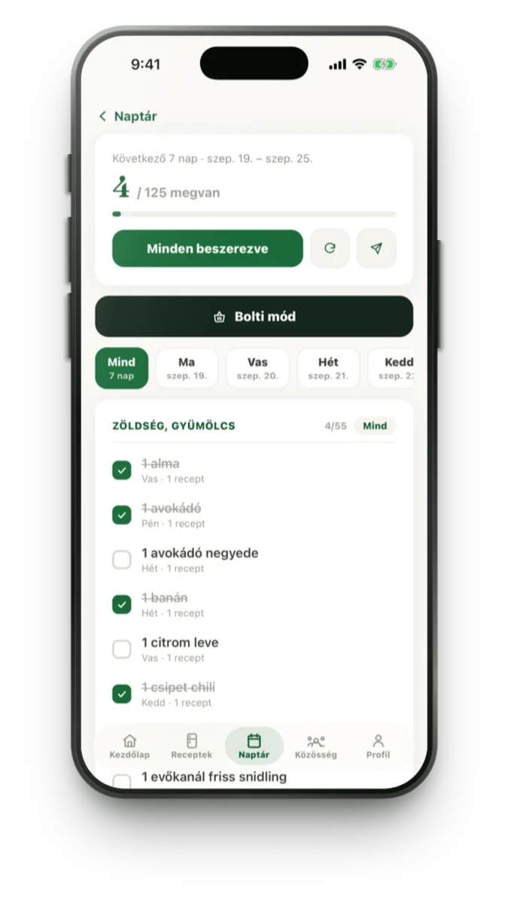
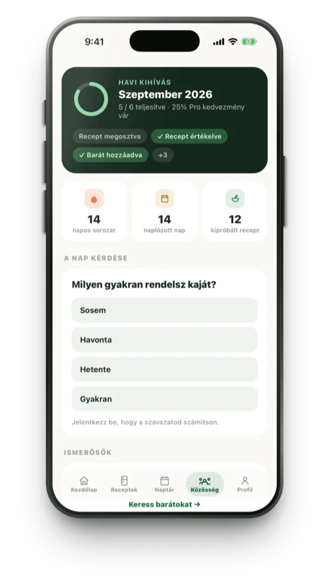
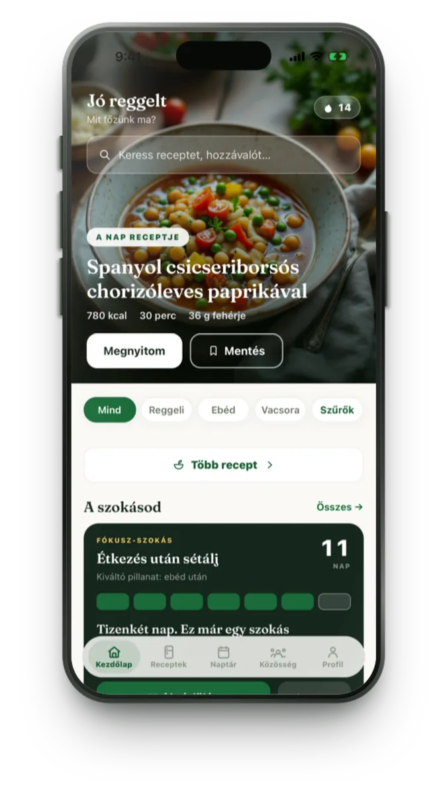
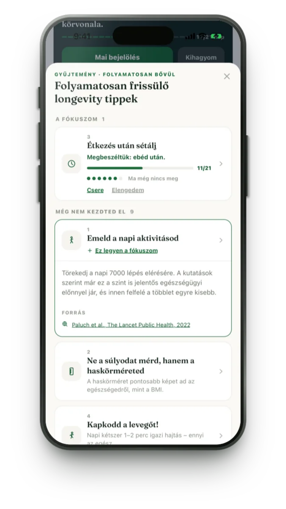
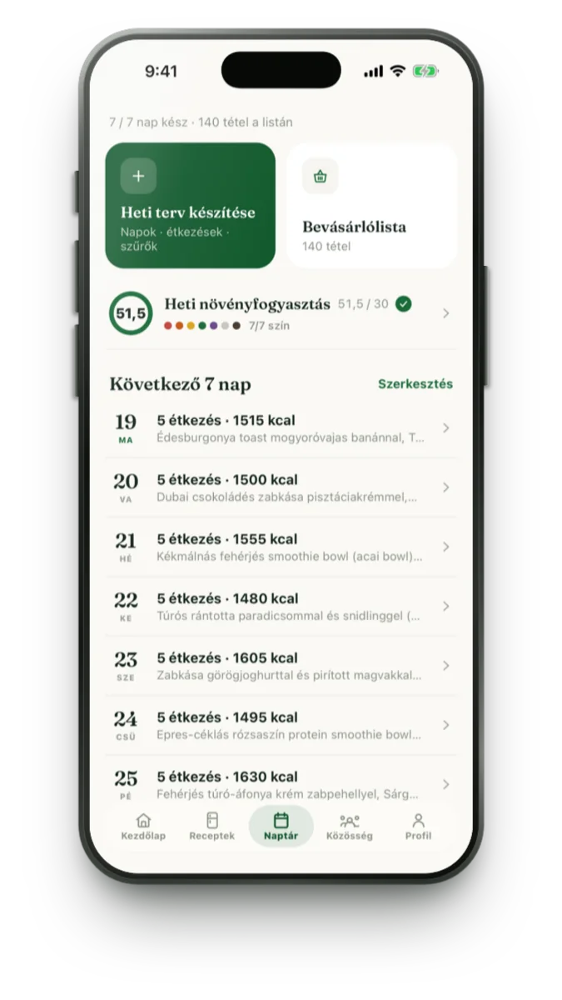

Heti terv három lépésben Pro
Napok → étkezések → szűrők. A varázsló a saját ízlésedből, allergiáidból és kalóriacélodból rak össze egy hetet — reggelitől vacsoráig, tízóraival és uzsonnával.

iPhone-ra · ingyenesen letölthető
Bevásárlólistával — és egy csapattal, amelyik nem hagy kiszállni a negyedik napon. 1300 egészséges recept magyarul, a te ízlésedre szabva.
Az alapverzió ingyenes. A FreshPlate Pro 7 napig ingyen kipróbálható, utána 1 990 Ft/hó vagy 12 990 Ft/év, bármikor lemondható. Az aktuális árat az App Store mutatja a vásárlás előtt.
Valódi receptek az appból, 1 900 kcal-os napi célra összerakva. Az appban a heti terv a saját célodhoz, ízlésedhez és allergiáidhoz igazodik.
01 / Hogyan működik
Három kérdés, egy lista, és egy csapat, aki holnap is rákérdez. Ennyi a rendszer.
Napok → étkezések → szűrők. A varázsló a saját ízlésedből, allergiáidból és kalóriacélodból rak össze egy hetet — reggelitől vacsoráig, tízóraival és uzsonnával.

A hét minden hozzávalója egy listán, polcok szerint rendezve. A boltban csak pipálsz — fejben nem kell tartanod semmit.

Egyszerre egy szokás épül. Hozz létre egy csoportot a pároddal, a kollégáiddal vagy a barátaiddal: mindenki látja, ki tartotta ma, és egy koppintással biztathatjátok egymást.

02 / Bevásárlólista
A heti terv minden hozzávalója egy listán, összeadva és a bolt bejárási sorrendjében: a zöldségestől a fűszerpolcig egyszer mész végig. A só, az olaj és a fűszerek összecsukva várnak, mert azok otthon is megvannak.
Ez a fenti minta-hét listája. Pipáld ki, ami már a kosárban van.
03 / Szokás és tippek
Nem tíz fogadalom januárban. Egyetlen fókusz, egy kiváltó pillanathoz kötve — és huszonegy nap, amíg beépül.
FÓKUSZ-SZOKÁS
Étkezés után sétálj
Kiváltó pillanat: ebéd után
7. napi mérföldkő teljesítve
Jelöld be a mai napot, vagy lépj tovább bejelölés nélkül — és nézd meg, mi történik a sorozattal.
Egy fókusz-szokás, egy kiváltó pillanathoz kötve („ebéd után”). Napi bejelölés, sorozat, a 7. és a 21. napi mérföldkő, alatta az utolsó 21 nap naptára. Hetente egy kihagyott nap belefér: a sorozat nem nullázódik, csak folytatod. A kezdőlapon és a főképernyős widgeten is ott van.

Longevity-tippek Pro
Rövid, kutatásokon alapuló tippek a mindennapokra — étkezés utáni séta, napi lépésszám, haskörméret a mérleg helyett. Mindegyiknél ott a forrás, hogy utána tudj nézni, és egy koppintással fókusz-szokás lesz belőle. Nem orvosi tanács.

04 / Csapat
Hozz létre egy csoportot a pároddal, a kollégáiddal vagy a barátaiddal. Közös napi szokás, közös huszonegy nap: mindenki látja, ki tartotta ma, és egy koppintással biztathatjátok egymást.
A CSOPORT KÖZÖS SZOKÁSA
MINDENNAP, EGYÜTT
Étkezés után sétálj
A vércukor legegyszerűbb természetes szabályozója: 10 perc séta.
Beállította: Anna
Megvan a mai közös nap
Ma már megvan: Anna, Kata
Koppints újra, ha mégsem.
21 egymást követő közös nap után beépült a szokás. Még 12 nap.
A közös nap akkor van meg, ha legalább 2 tag bejelöli – így egy kihagyott nap nem visz mindenkit magával.
AZ ELMÚLT 7 NAP
05 / Amit még tud
Hét szín, harminc különböző növény hetente — a változatosságot méri, nem csak a kalóriát.
Ha bekapcsolod, a napi kalóriacél az elégetett aktív energiához igazodik. Az adat nem hagyja el a telefonodat.
Szokás, mai étkezések és energiamérleg — egy pillantásra, az app megnyitása nélkül.
Hétfőn egy oldalon: naplózott napok, átlagok, mit ettél a legtöbbször, hogyan alakult a súlyod.
06 / Árak
Letöltés után minden alapfunkció azonnal a tiéd, reklám nélkül. A heti tervet és a bevásárlólistát 7 napig ingyen kipróbálhatod.
Ingyenes
Letöltés után azonnal.
FreshPlate Pro
Az első 7 nap ingyenvagy 12 990 Ft / év · az első 7 nap ingyen
A próba után az előfizetés automatikusan megújul, az App Store beállításaiban bármikor lemondható. Az aktuális árat az App Store mutatja a vásárlás előtt.
Android
A FreshPlate ma iPhone-on érhető el. Az Android-verzió készül — hagyd itt az e-mail-címed, és egyszer szólunk, amikor megjelent. Mást nem küldünk.
07 / Gyakori kérdések
Más kérdés? Írj a support@freshplate.hu címre, vagy nézd meg a támogatási oldalt.
Igen: a letöltés és az alapverzió ingyenes, reklám nélkül. A Pro a heti terv varázslót, a bevásárlólistát és a növény-követőt oldja fel; 7 napig ingyen kipróbálhatod, utána 1 990 Ft/hó vagy 12 990 Ft/év.
Az alapfunkciókhoz nem. Fiók a csoportokhoz és a barátokhoz kell — e-mail-címmel vagy Bejelentkezés az Apple-lel.
Nem. A FreshPlate nem tilt és nem számol le: heti menüt ad, ami a saját célodhoz és ízlésedhez igazodik, és segít, hogy a jó szokás megmaradjon. Nem helyettesíti az orvosi vagy dietetikusi tanácsadást.
Csak az elégetett aktív energiát, és csak ha te bekapcsolod. Az érték nem hagyja el a telefonodat, és soha nem használjuk hirdetésre.
Az iPhone Beállítások → Apple-fiók → Előfizetések menüben, bármikor. A próbaidő alatt lemondva nem kerül semmibe.
Készül. Iratkozz fel a várólistára, és szólunk, amint elérhető.
Utána egész héten tudod, mit eszel — és azt is, mit kell venni hozzá.
 Gépen olvasod?
Gépen olvasod?